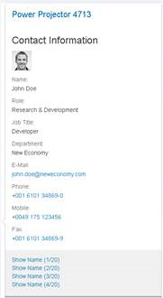
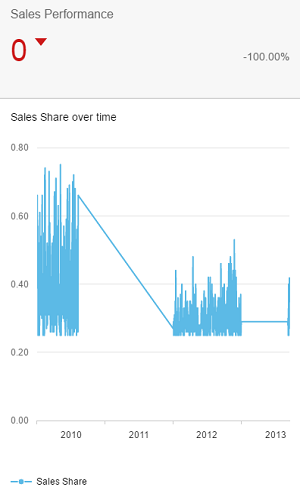
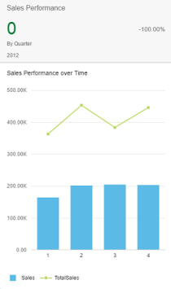

With this release the UI development toolkit for HTML5 (SAPUI5) is upgraded from version 1.38 to 1.40.
In the following sections, we list the main new features and enhancements to SAPUI5. For a complete, detailed list of all new and enhanced functions, see: Change Log.
New Belize Theme (SAP Fiori 2.0 Design)
The SAP Fiori 2.0 design is now supported and the corresponding theme
Belize (sap_belize) has been introduced. The Belize theme replaces Blue Crystal
(sap_bluecrystal) as the default theme. Blue Crystal is only supported until version 1.38.Caution
The Belize theme does not support deprecated libraries such as sap.ui.commons, sap.makit, or
sap.ui.ux3 (see Deprecated Themes and Libraries).
Custom themes based on sap_bluecrystal are no longer supported with 1.40 or higher. Furthermore, custom themes cannot be
converted to Belize automatically, you will have to adapt them manually.
Belize does not support the same set of theme parameters as Blue Crystal. If you use custom themes or custom controls, check whether all
parameters you use are still supported.
Note
Sorry! Many of the examples, tutorials, and screenshots in this documentation still use Blue Crystal (sap_bluecrystal).
Since there are so many, we simply could not manage to update those. Please keep in mind that you should use Belize
(sap_belize) instead.
Older jQuery Versions Removed
As of this version, SAPUI5 only contains one version of jQuery (the current version is
2.2.3). This standard version is always used when no other jQuery version is included in the bootstrap of an app. If you need a specific jQuery
version for your app, add and load it explicitly as described in noJQuery Variant for Bootstrapping. Check the console for
the related warning message if you are unsure which version you are using.
XML View Cache
You can use a caching mechanism to speed up processing times of XML views that make heavy use of the preprocessor feature. To make sure that the cache
always contains the latest view data, invalidate the cache whenever the data that is needed for preprocessing changes. When the cache is
invalidated, all resources are processed again and the cache gets filled with new data. For more information, see XML View Cache.
Parts of this feature are currently still experimental! For more information, see
API Reference: sap.ui.xmlview.
New Controls
New controls for the
Visual Interaction toolkit (sap.ui.vk library):
Improved Features
SAPUI5 OData V4 Model
The second version of the
SAPUI5 OData V4 model introduces the following
features:
-
Server-side sorting and filtering integrated in the SAPUI5
programming model
-
Reset changes functionality for batch groups
-
List bindings and context bindings with relative paths can read their own data
-
Context objects as an API
-
Support for contained entities
Restriction
Due to the limited feature scope of this version of the SAPUI5 OData V4 model, check that
all required features are in place before developing applications. Double check the detailed documentation of the features, as certain
parts of a feature may be missing although you might expect these parts as given. While we aimed at being compatible with existing
controls, some controls might not work due to small incompatibilities compared to sap.ui.model.odata.(v2.)ODataModel,
or due to missing features in the model (like tree binding). The interface for applications has been changed for easier and more
efficient use of the model. For a summary of these changes, see Changes Compared to OData V2 Model.
For more information, see OData V4 Model, the API
Reference, and the sample in the Demo Kit.
Improved Controls
-
sap.m.GenericTile: The GenericTile control can be implemented as slide tile. The animated content
of the slide tile now includes a navigation option to pause the slide show or to navigate forward or backward to the slide. For more information, see the API
Reference, and the sample in the Demo Kit.
-
sap.m.IconTabHeaderMode: A new IconTabBar property, headerMode, has been
introduced. It accepts sap.m.IconTabHeaderMode.Standard and sap.m.IconTabHeaderMode.Inline values.
Inline mode forces the tab text and item number to be on the same row. For more information, see the API
Reference, and the sample in the Demo Kit.
-
sap.m.Page: The Page control now offers a floating footer. This new feature helps unify the
look-and-feel of page controls and also improves the visibility of the actions located in the footer. The floating footer can be
switched on with the toggleFooter property. For
more information, see the API Reference, and the sample in the Demo Kit.
-
sap.m.OverflowToolbar:
-
sap.ui.comp.smartfield.SmartField can now overflow to improve usability on smaller screens.
-
The overflow menu is now configurable to remain open if the selected element triggers sap.m.ActionSheet or
sap.m.Popover.
-
sap.m.RangeSlider:
-
The tooltips above the handles of the RangeSlider can be used to define values for the slider. This eases
the interaction with the control and helps users to enter precise values. You can enable this by setting the
inputsAsTooltips property. For
more information, see the API Reference in the Demo Kit.
-
You can now move the entire selected range. Selecting and holding the range line moves the whole range. For more information, see the sample in the Demo Kit.
-
sap.m.Text : Line breaks (\r\n, \n\r, \r, \n)
are always visualized now. You can disable this by setting the wrapping property to false. For more information, see the API
Reference in the Demo Kit.
-
sap.m.TimePicker: The
TimePicker control now has configurable step precision
for minutes and seconds.
For more
information, see the API Reference in the Demo
Kit.
-
sap.suite.ui.commons.ChartContainer: An application can set its own toolbar inside a
ChartContainer control. If no custom toolbar has been configured, the control behaves as before and provides only
the embedded buttons. If a custom toolbar has been configured, it is visible next to the embedded buttons that are still present and
integrated using a placeholder. For more information, see the
API Reference and the samples in the Demo Kit.
-
sap.ui.comp.navpopover.NavigationPopover: The NavigationPopover control has been redesigned and
now has a fresh new look. The control now supports a responsive design and works on mobile devices. For more information, see the API Reference and the samples in the Demo Kit.
-
sap.ui.comp.navpopover.SmartLink: A new property contactAnnotationPath allows you
to show contact information in the popover of the SmartLink control if the OData service contains the
com.sap.vocabularies.Communication.v1.Contact annotation.

-
sap.ui.comp.smartchart.SmartChart: The
SmartChart control now provides a download function by
offering the
Download Chart button in the toolbar. This function is disabled by default and can be enabled by
setting the
showDownloadButton property to
true. Clicking this button downloads a picture, in PNG
format, of the section of the chart that is currently visible.
Note
In Microsoft Internet Explorer, only SVG formats can be downloaded. Here the user is notified in a notification bar at the bottom
of the page that allows them to display or download the chart.
For more information, see , the API Reference and the sample in the Demo Kit.
-
sap.ui.comp.smartchart.SmartChart and sap.ui.comp.smarttable.SmartTable: The
SmartChart and SmartTable controls can now handle custom qualifiers for the
PresentationVariant annotation and, if relevant, the LineItem annotation using
customData.
Like before, the SmartTable control first checks for a PresentationVariant annotation or rather a
default LineItem in the presentation variant visualizations, and, if none is found, it checks for a default
LineItem annotation in the entity itself.
-
sap.ui.core.format.NumberFormat: You can now use the shortRefNumber option to calculate all
numbers in one screen, especially for charts, based on the same scaling factor. With the showScale option, you can show
or hide the scaling factor in the formatted number. The scaling takes the current locale into account. For more information, see the API Reference in the Demo Kit.
-
Visual Interaction toolkit (sap.ui.vk library):
-
The library now includes support for the SAP 3D Visual Enterprise 9.0 VDS4 file format.
-
sap.ui.vk.Loco: Loco control has been updated to handle gestures for creating and editing
redlining objects. For more information, see the API Reference in the Demo Kit.
SAP Fiori Elements
The smart
templates (list report and object page templates) and overview pages will now be collectively known as SAP Fiori elements. The documentation has
been updated to reflect this change, and the term smart templates is no longer used to refer to the list report and object page templates. Note
that the tile in SAP Web IDE is currently still labeled Smart Template Application.
List Report and Object Page
-
General Features
-
External navigation: You can now enable intent-based navigation from the create action in the list
report and the edit action on the object page to a different app. This feature can be used to delegate these actions to
another, for example non-SAP Fiori, app.
-
Belize theme: The list report and object page now support the new Belize theme visual design for SAP
Fiori apps.
-
Determining actions: You can now add determining actions to the footer of the list report or object page
views. Currently, two types of determining actions are supported:
-
List Report View
-
Disable the delete action: You can now enable or disable the delete action on the list report based on
certain conditions specified in the back-end system. For example, you may wish to disable deletion for a sales order that
has already been paid.
-
Improved error and message handling: Various 5xx / 4xx HTTP error codes related to system
unavailability, authorization, and authentication are now handled in the list report. Meaningful and appropriate error
messages are displayed, enhancing the usability of the application.
-
Dynamic page: The dynamic page with snapping header and floating tool bar is now available for the list
report.
-
Object Page View
-
Hide the edit and delete actions: You can now display or hide the edit action and delete action on the
object page based on certain conditions that are specified in your back-end system. For example, you may wish to hide the
Edit button for a sales order that has already been paid.
-
Micro chart: You can now add micro charts to a facet within the header area in the object page. Currently,
the object page template supports bullet and area micro charts.
-
Progress and rating indicator: You can now add progress and rating indicators to a header facet on the
object page.
Overview pages have been enhanced with the following features:
-
View switch in analytic cards: Multiple individual cards can now be combined and displayed within a single card
via the view switch feature. The switch is enabled from a dropdown menu below the header area.
-
Semantic coloring based on threshold values: With this feature, column chart cards can be colored semantically
based on threshold values. The threshold values come from data point annotation that is associated with the measure used in the
analytic card.
-
You can now create the following cards:
|
Time Series Chart Card
|
Combination Chart Card
|
Scatter Chart Card
|
|
You can now create charts that use time as an axis category.
|
With a combination chart card, you can display more than one measure; the first measure gets displayed in a
column format and the subsequent measure is displayed as lines within the chart.
|
With a scatter chart card, you can visualize the distribution of data points over two measures.
|
|

|

|

|
-
Configuration chart navigation mode: You can now configure the chart mode so that by clicking on a data point in
the chart area of an analytic card you can see the name and value of the selected dimension.
-
Chart title: Use the annotation term UI.Chart to display a chart title within the chart area of
an analytic card.
Analysis Path Framework (APF)
APF for SAP S/4HANA Cloud (New)
The APF Configuration Modeler app, as well as the generic APF runtime app, are now also available for SAP S/4HANA Cloud. This includes transporting APF
content using the Adaptation Transport Organizer (ATO).
SAP Smart Business Design Time Integration in SAP S/4HANA (New)
In SAP S/4HANA, APF is now available as a drill-down option in the SAP Smart Business KPI tile configuration. This helps to conveniently
configure a KPI tile for an APF-based app. For more information, see Configuring the SAP Smart Business KPI Tile.
Default Values in Filter Configuration (Changed)
When you configure a filter, you can now specify that no values are selected by default at runtime. This option can improve the performance for filters
that are optional, have a lot of values, and support multiple selections. For more information, see Individually Configured Filters.
Documentation Changes
Since the Control-specific Information was not easy to find, we decided to move the content to the new section
More About Controls on top level of the structure (see More About Controls).
The documentation for Analysis Path Framework that has been located
at the end of the documentation structure can now be found under Developing Apps with Analysis Path Framework (APF) (see
Developing Apps with Analysis Path Framework (APF)).